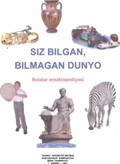

SBKichik maktab yoshidagi bolalar uchun qiziqarli va rang-barang ma'lumotlarga boy ensiklopediya.
Ushbu bolalar ensiklopediyasi kichik yoshdagi maktab o'quvchilariga mo'ljallangan bo'lib, turli qiziqarli ilmiy-ommabop ma'lumotlarni o'z ichiga oladi. Kitobda dunyo, tabiat, fan va boshqa ko'plab mavzularda foydali ma'lumotlar rangli rasmlar bilan tushuntirilgan. Undan katta yoshdagilar ham dunyoviy bilimlarini boyitish uchun foydalanishlari mumkin.